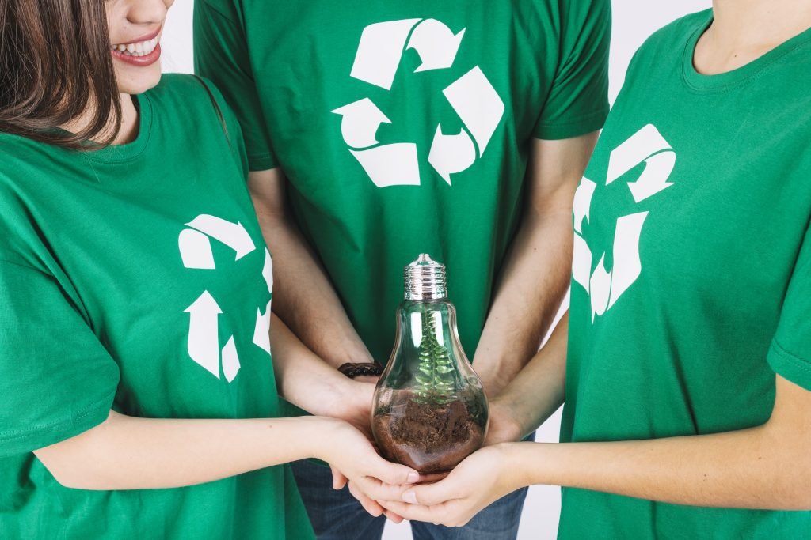

Importância da reciclagem para o meio ambiente
A reciclagem ajuda a preservar recursos naturais e a reduzir o consumo de energia. Quando reciclamos, diminuímos a necessidade de extração de madeira, petróleo e minerais, protegendo florestas, rios e habitats naturais.
O processo de reciclagem envolve coleta, classificação, limpeza e transformação do material. Cada etapa é essencial para evitar que lixo vá para aterros e contamine o solo e a água.
Tipos de resíduos e seu impacto
- Papel e papelão — reciclar economiza árvores e água.
- Plástico — reciclagem reduz a poluição de oceanos e lagos.
- Vidro — reaproveitar vidro evita a extração de areia e reduz emissões.
- Metal — reciclar metal economiza energia e diminui a mineração.
- Orgânicos — compostagem transforma resíduos em adubo e evita metano.

Reciclar não é apenas separar o lixo, é mudar hábitos para manter o planeta saudável.
Como você pode ajudar
Você pode:
- Reduzir o consumo de plástico descartável.
- Doar materiais recicláveis limpos.
- Participar de campanhas de conscientização.